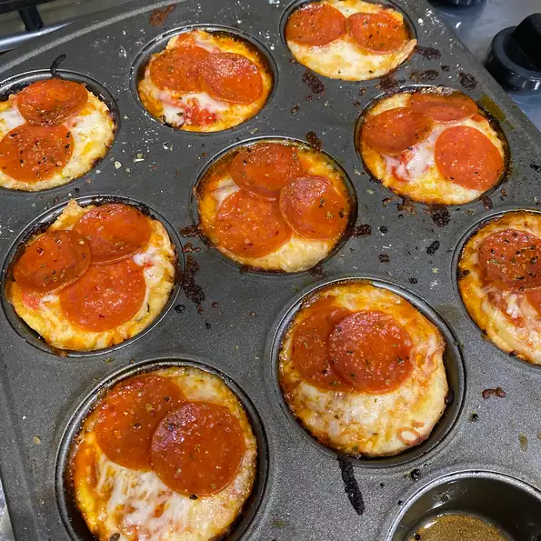

Pizza Cupcakes

Description:
An easy finger food that's sure to please guests on during any get together! Make them for game day, birthdays, or even family movie night. Feel free to make changes based on your own personal tastes
Ingredients
- cooking spray
- 8 medium cherry tomatoes
- 1 (11 oz) can of refrigerated pizza crust
- 8 tsp shredded mozzarella cheese
- ½ cup pizza sauce
- 8 tsp finely chopped red onion
- ½ cup shredded mozzarella cheese
- 8 slices pepperoni, quartered
- Italian seasoning
- red pepper flakes
- garlic salt
- Step 1: Preheat the oven to 400 degrees F (200 degrees C). Spray 8 cups of a muffin tin with cooking spray.
- Step 2: Finely chop cherry tomatoes and drain any liquid. Set aside.
- Step 3: Unroll pizza crust on a floured work surface and roll out thinly into a large rectangle. Using a 4-inch round cookie or biscuit cutter, cut 8 circles in the dough. Place dough circles in the prepared muffin cups, pressing dough into the bottom and up the sides of each cup.
- Step 4: Drop 1 teaspoon mozzarella into each cup. Top with 1 tablespoon of pizza sauce. Add chopped tomatoes and red onions. Add 1 tablespoon of mozzarella to each cup, and top with pepperoni. Sprinkle each cup with Italian seasoning, red pepper flakes, and garlic salt to taste.
- Step 5: Bake in the preheated oven until cheese is bubbling and melted, 14 to 15 minutes. Remove from the oven and let cool in the tin for about 5 minutes. Remove from the tin and serve hot.